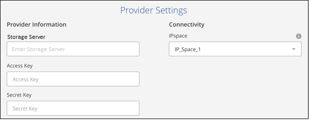
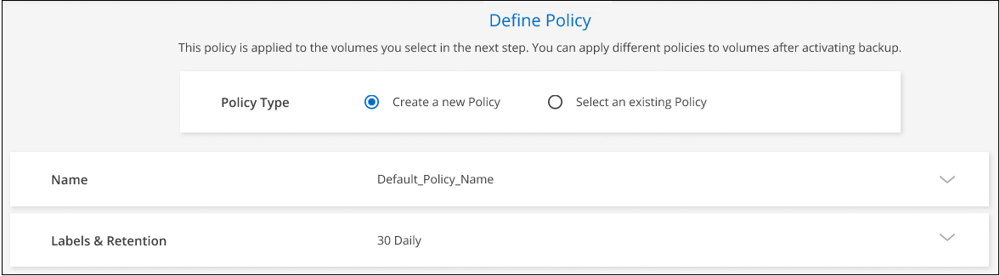
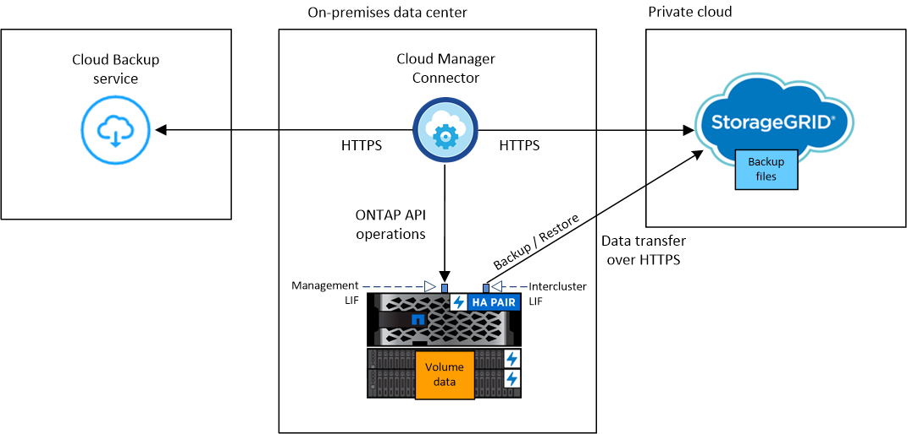

Amazon Web Services
Amazon Web Services
 Google Cloud
Google Cloud
 Microsoft Azure
Microsoft Azure
 请求文档变更
请求文档变更 在 GitHub 上编辑
在 GitHub 上编辑 提供者指南
提供者指南将内部 ONTAP 数据备份到 StorageGRID
完成几个步骤，开始将数据从内部 ONTAP 系统备份到 NetApp StorageGRID 系统中的对象存储。
请注意， " 内部 ONTAP 系统 " 包括 FAS ， AFF 和 ONTAP Select 系统。
快速入门
按照以下步骤快速入门，或者向下滚动到其余部分以了解完整详细信息。
{kind=link}
-
您已发现内部集群并将其添加到 Cloud Manager 中的工作环境中。请参见 "发现 ONTAP 集群" 了解详细信息。
-
此集群运行的是 ONTAP 9.7P5 或更高版本。
-
集群具有 SnapMirror 许可证—它作为超值包或数据保护包的一部分提供。
-
集群必须与 StorageGRID 和 Connector 建立所需的网络连接。
-
-
您的内部安装了一个 Connector 。
-
无论是否可访问 Internet ，均可将 Connector 安装在站点中。
-
通过为连接器建立网络，可以与 ONTAP 集群和 StorageGRID 建立出站 HTTPS 连接。
-
-
您已购买 "并激活" NetApp 提供的 Cloud Backup BYOL 许可证。
-
您的 StorageGRID 安装了 10.3 或更高版本，并且访问密钥具有 S3 权限。
选择工作环境，然后单击右侧面板中备份和还原服务旁边的 * 启用 > 备份卷 * ，然后按照设置向导进行操作。

选择 StorageGRID 作为提供程序，然后输入 StorageGRID 服务器和服务帐户详细信息。您还需要在卷所在的 ONTAP 集群中指定 IP 空间。

默认策略每天备份卷，并保留每个卷的最新 30 个备份副本。更改为每小时、每天、每周、每月或每年备份、 或者、选择一个系统定义的策略以提供更多选项。您还可以更改要保留的备份副本数。

在选择卷页面中，使用默认备份策略确定要备份的卷。如果要为某些卷分配不同的备份策略，可以创建其他策略并稍后将其应用于卷。
系统会在您输入的 S3 访问密钥和机密密钥所指示的服务帐户中自动创建 S3 存储分段，备份文件存储在该处。
要求
在开始将内部卷备份到 StorageGRID 之前，请阅读以下要求，以确保您的配置受支持。
下图显示了将内部 ONTAP 系统备份到 StorageGRID 时的每个组件以及需要在它们之间准备的连接：

如果 Connector 和内部 ONTAP 系统安装在无法访问 Internet 的内部位置，则 StorageGRID 系统必须位于同一内部数据中心。
准备 ONTAP 集群
您需要先在 Cloud Manager 中发现内部 ONTAP 集群，然后才能开始备份卷数据。
- ONTAP 要求
- 集群网络连接要求
-
-
ONTAP 集群通过用户指定的端口从集群间LIF启动HTTPS连接到StorageGRID 网关节点、以执行备份和还原操作。此端口可在备份设置期间进行配置。
ONTAP 可在对象存储之间读取和写入数据。对象存储永远不会启动，而只是响应。
-
ONTAP 需要从连接器到集群管理 LIF 的入站连接。连接器必须位于您的内部。
-
托管要备份的卷的每个 ONTAP 节点都需要一个集群间 LIF 。LIF 必须与 _IP 空间 _ 关联， ONTAP 应使用此 _IP 空间 _ 连接到对象存储。 "了解有关 IP 空间的更多信息"。
设置 Cloud Backup 时，系统会提示您使用 IP 空间。您应选择与每个 LIF 关联的 IP 空间。这可能是您创建的 " 默认 "IP 空间或自定义 IP 空间。
-
节点的集群间 LIF 可以访问对象存储（如果在 " 非公开 " 站点中安装了 Connector ，则不需要）。
-
已为卷所在的 Storage VM 配置 DNS 服务器。请参见操作说明 "为 SVM 配置 DNS 服务"。
-
请注意，如果您使用的 IP 空间与默认 IP 空间不同，则可能需要创建静态路由才能访问对象存储。
-
如有必要，请更新防火墙规则，以允许通过您指定的端口（通常为端口 443 ）从 ONTAP 到对象存储的 Cloud Backup Service 连接，并允许通过端口 53 （ TCP/UDP ）从 Storage VM 到 DNS 服务器的名称解析流量。
-
正在准备 StorageGRID
StorageGRID 必须满足以下要求。请参见 "StorageGRID 文档" 有关详细信息 …
- 支持的 StorageGRID 版本
-
支持 StorageGRID 10.3 及更高版本。
- S3 凭据
-
在设置到 StorageGRID 的备份时，备份向导会提示您为服务帐户输入 S3 访问密钥和机密密钥。通过服务帐户， Cloud Backup 可以对用于存储备份的 StorageGRID 存储分段进行身份验证和访问。这些密钥是必需的，以便 StorageGRID 知道是谁发出请求。
这些访问密钥必须与具有以下权限的用户相关联：
"s3:ListAllMyBuckets", "s3:ListBucket", "s3:GetObject", "s3:PutObject", "s3:DeleteObject", "s3:CreateBucket" - 对象版本控制
-
不能在对象存储分段上启用 StorageGRID 对象版本控制。
创建或切换连接器
将数据备份到 StorageGRID 时，您的内部必须具有一个连接器。您需要安装新的 Connector 或确保当前选定的 Connector 位于内部。无论是否可访问 Internet ，均可将 Connector 安装在站点中。

|
Cloud Manager Connector 内置了 Cloud Backup 功能。如果安装在无法连接 Internet 的站点上，则需要定期更新 Connector 软件才能访问新功能。检查 "Cloud Backup 新增功能" 要查看每个 Cloud Backup 版本中的新功能，然后您可以按照步骤执行操作 "升级 Connector 软件" 希望使用新功能时。 |
为连接器准备网络连接
确保此连接器具有所需的网络连接。
-
确保安装 Connector 的网络启用以下连接：
-
通过端口443与StorageGRID 网关节点建立HTTPS连接
-
通过端口 443 与 ONTAP 集群管理 LIF 建立 HTTPS 连接
-
通过端口 443 与 Cloud Backup 建立出站 Internet 连接（在 " 非公开 " 站点中安装 Connector 时不需要）
-
许可证要求
在为集群激活Cloud Backup之前、您需要从NetApp购买并激活Cloud Backup BYOL许可证。此许可证适用于帐户，可在多个系统中使用。
您需要 NetApp 提供的序列号，以便在许可证有效期和容量内使用此服务。 "了解如何管理 BYOL 许可证"。

|
将文件备份到 StorageGRID 时不支持 PAYGO 许可。 |
启用云备份到 StorageGRID
可随时直接从内部工作环境启用 Cloud Backup 。
-
在 Canvas 中，选择内部工作环境，然后单击右侧面板中备份和还原服务旁边的 * 启用 > 备份卷 * 。
-
选择 * StorageGRID 提供程序 * ，单击 * 下一步 * ，然后输入提供程序详细信息：
-
StorageGRID 网关节点的FQDN以及ONTAP 与StorageGRID 进行HTTPS通信时应使用的端口；例如：
s3.eng.company.com:8082 -
用于访问存储备份的存储分段的访问密钥和机密密钥。
-
要备份的卷所在的 ONTAP 集群中的 IP 空间。此 IP 空间的集群间 LIF 必须具有出站 Internet 访问权限（在 " 非公开 " 站点中安装 Connector 时不需要）。
选择正确的 IP 空间可确保 Cloud Backup 可以设置从 ONTAP 到 StorageGRID 对象存储的连接。
请注意，服务启动后，您无法更改此信息。
-
-
输入要用于默认策略的备份策略详细信息、然后单击*下一步*。您可以选择现有策略、也可以通过在每个部分中输入所做的选择来创建新策略：
-
输入默认策略的名称。您无需更改名称。
-
定义备份计划并选择要保留的备份数。 "请参见您可以选择的现有策略列表"。
-
-
在选择卷页面中，使用默认备份策略选择要备份的卷。如果要为某些卷分配不同的备份策略，可以创建其他策略并稍后将其应用于这些卷。
-
要备份所有卷，请选中标题行（
 ）。
）。 -
要备份单个卷，请选中每个卷对应的框（
 ）。
）。
如果您希望将来添加到此集群的所有卷都启用备份，只需选中 " 自动备份未来卷 …" 复选框即可。如果禁用此设置，则需要手动为未来的卷启用备份。
-
-
单击 * 激活备份 * ， Cloud Backup 将开始对每个选定卷进行初始备份。
系统会在您输入的 S3 访问密钥和机密密钥所指示的服务帐户中自动创建 S3 存储分段，备份文件存储在该处。此时将显示卷备份信息板，以便您可以监控备份的状态。
您可以 "启动和停止卷备份或更改备份计划"。您也可以 "从备份文件还原整个卷或单个文件" 内部部署的ONTAP 系统。